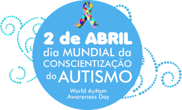

A Deficiência Intelectual, segundo a Associação Americana sobre Deficiência Intelectual do Desenvolvimento AAIDD, caracteriza-se por um
funcionamento intelectual inferior à média (QI), associado a limitações adaptativas em pelo menos duas áreas de habilidades (comunicação,
autocuidado, vida no lar, adaptação social, saúde e segurança, uso de recursos da comunidade, determinação, funções acadêmicas, lazer e
trabalho), que ocorrem antes dos 18 anos de idade.
-A habilidade conceitual é compreendida como aquela que faz referência as capacidades essenciais da inteligência, envolvendo suas grandezas abstratas como, por exemplo, leitura e escrita, conceito de dinheiro e linguagem (receptiva e significativa).
-A habilidade prática se refere à habilidade de se sustentar e de se manter como um indivíduo autônomo nas atividades corriqueiras da vida diária, compreendendo, entre outros, as habilidades sensório-motoras, de auto-cuidado e segurança, de trabalho e descanso.
-A habilidade social diz respeito à habilidade para compreender as perspectivas sobre condutas socialmente adequadas/aceitas, como, por exemplo, responsabilidade, inocência (possibilidade de ser ludibriado e alvo de abuso e/ou violência) e auto-estima.
No dia a dia, isso significa que a pessoa com Deficiência Intelectual tem dificuldade para aprender, entender e realizar atividades comuns
para as outras pessoas. Muitas vezes, essa pessoa se comporta como se tivesse menos idade do que realmente tem.
A Deficiência Intelectual é resultado, quase sempre, de uma alteração no desempenho cerebral, provocada por fatores genéticos, distúrbios
na gestação, problemas no parto ou na vida após o nascimento. Um dos maiores desafios enfrentados pelos pesquisadores da área é que em
grande parte dos casos estudados essa alteração não tem uma causa conhecida ou identificada. Muitas vezes não se chega a estabelecer
claramente a origem da deficiência.
Dimensão II-Comportamento AdaptativoRaciocínio, planejamento, pensamento abstrato, compreensão de ideias complexas, rapidez na aprendizagem, etc.
A-Habilidades Conceituais = Relativas aos aspectos acadêmicos, cognitivos e de comunicação
Linguagem receptiva e expressiva, Leitura e escrita, Conhecimento sobre dinheiro, tempo, Autonomia, Autodirecionamento.
B-Habilidades Sociais = Relativas à competência social
Habilidades interpessoais, Responsabilidade, Auto-estima , Credulidade , Ingenuidade, prudência, seguir e obedecer regras e leis, capacidade de solucionar problemas sociais, evitar ser vitimizado...
Dimensão III-Participação, Interações e Papéis SociaisC-Habilidades práticas = Relativas à independência
AVD = Auto-cuidado (alimentar-se, preparar alimento, deslocar-se, higienizar-se, vestir-se...
AIVD = Preparação de alimento, cuidado com ambiente, meios de transporte, tomar remédio, telefone, transferência, mobilidade, etc.
Habilidades ocupacionais
Segurança no ambiente
Dimensão IV-SaúdeParticipação e interações - engajamento nas atividades de interação com o mundo físico e social, envolvimento e realização de tarefas em situações da vida real
Papéis socialmente valorizados - relativos a atividades específicas da idade emprego, educação, participação comunitária, recreação e lazer, etc.
Dimensão V-ContextoCondições de saúde física e mental
Efeitos da medicação - desempenho e disposição pessoal
Avaliação das necessidades de apoio - condições de saúde física e mental
(Gozam de boa saúde sem limitações importantes da atividade? Podem participar integralmente dos papéis sociais: trabalho, recreação, lazer?
Relativo a ambientes e cultura
Condições nas quais a pessoa vive em seu cotidiano Níveis:
-Microssistema: ambiente social imediato – família, cuidadores
-Mesossistema: vizinhança, comunidade, escola, organizações de apoio
-Macrossistema: padrões culturais, sociedade, país, influências sócio-políticas
Os fatores de risco e causas que podem levar à Deficiência Intelectual podem ocorrer em três fases: pré-natais, perinatais e pós-natais.
Pré-nataisFatores que incidem desde o momento da concepção do bebê até o início do trabalho de parto:
Fatores genéticos
Alterações cromossômicas (numéricas ou estruturais) - provocam Síndrome de Down, entre outras.
Alterações gênicas (erros inatos do metabolismo): que provocam Fenilcetonúria, entre outras.
Fatores que afetam o complexo materno-fetal.
PerinataisTabagismo, alcoolismo, consumo de drogas, efeitos colaterais de medicamentos teratogênicos (capazes de provocar danos nos embriões e fetos).
Doenças maternas crônicas ou gestacionais (como diabetes mellitus).
Doenças infecciosas na mãe, que podem comprometer o feto: sífilis, rubéola, toxoplasmose.
Desnutrição materna.
Fatores que incidem do início do trabalho de parto até o 30.º dia de vida do bebê:
Pós-nataisHipóxia ou anoxia (oxigenação cerebral insuficiente).
Prematuridade e baixo peso: Pequeno para Idade Gestacional (PIG). Icterícia grave do recém-nascido (kernicterus).
Fatores que incidem do 30.º dia de vida do bebê até o final da adolescência:
Desnutrição, desidratação grave, carência de estimulação global. Infecções: meningites, sarampo. Intoxicações exógenas: envenenamentos provocados por remédios, inseticidas, produtos químicos como chumbo, mercúrio etc. Acidentes: trânsito, afogamento, choque elétrico, asfixia, quedas etc.
-Síndrome do X-FrágilAlteração genética que ocorre na formação do bebê, no início da gravidez. O grau de deficiência intelectual provocado pela síndrome é variável, e o coeficiente de inteligência (QI) pode variar e chegar a valores inferiores a 40. A linguagem fica mais comprometida, mas a visão é relativamente preservada. As interações sociais podem se desenvolver bem, no entanto podem aparecer distúrbios como hiperatividade, depressão, entre outros.
-Síndrome de Prader-WilliAlteração genética que provoca atraso mental. A criança apresenta face alongada, orelhas grandes ou salientes, além de comprometimento ocular e comportamento social atípico, principalmente timidez.
-Síndrome de AngelmanO quadro clínico varia de paciente a paciente, conforme a idade. No período neonatal, a criança apresenta severa hipotonia muscular, baixo peso e pequena estatura. Em geral a pessoa apresenta problemas de aprendizagem e dificuldade para pensamentos e conceitos abstratos.
-Síndrome WilliamsDistúrbio neurológico que causa deficiência intelectual, comprometimento ou ausência de fala, epilepsia, atraso psicomotor, andar desequilibrado, com as pernas afastadas e esticadas, sono entrecortado e difícil, alterações no comportamento, entre outras.
-Erros Inatos de Metabolismo(Fenilcetonúria, Hipotireoidismo congênito etc.)Alteração genética que causa deficiência intelectual de leve a moderada. A pessoa apresenta comprometimento maior da capacidade visual e espacial em contraste com um bom desenvolvimento da linguagem oral e na música.
-TEA–Transtorno do Espectro do Autismo Alterações metabólicas, em geral enzimáticas, que normalmente não apresentam sinais nem sintomas sugestivos de doenças. São detectados pelo Teste do Pezinho, e quando tratados adequadamente, podem prevenir o aparecimento de deficiência intelectual. Alguns achados clínicos ou laboratoriais que sugerem esse tipo de distúrbio metabólico: falha de crescimento adequado, doenças recorrentes e inexplicáveis, convulsões, atoxia, perda de habilidade psicomotora, hipotonia, sonolência anormal ou coma, anormalidade ocular, sexual, de pelos e cabelos, surdez inexplicada, acidose láctea e/ou metabólica, distúrbios de colesterol, entre outros.
Três características Básicas para definir o TEA:
-Dificuldade de interação social;
-Déficit de comunicação social, tanto quantitativo quanto qualitativo;
-Padrões inadequados de comportamento que não possuem finalidade social.
É classificado em 3 graus atualmente: autismo leve, autismo moderado, autismo severo.
Autismo é uma severa desordem no desenvolvimento , inicia-se desde o nascimento, ou se desenvolve nos primeiros dois anos e meio de vida.A maioria das crianças autistas são, aparentemente, perfeitamente normais, mas passam o tempo envolvidas em comportamentos ininteligíveis e hiper-ativos, completamente distintos do comportamento de crianças típicas.
A idade em que começa a intervenção tem um impacto direto nos resultados. Quanto mais cedo uma criança começa a ser tratada melhor será seu prognóstico. Recentemente há um aumento na porcentagem de crianças que freqüentam a escola em salas de aula convencionais e vivem de forma semi-independente em comunidades. Entretanto, a maioria das pessoas autistas permanence com déficits em suas habilidades de comunicação e socialização.
Muita gente confunde Deficiência Intelectual e doença mental, mas é importante esclarecer que são duas coisas bem diferentes.
Na Deficiência Intelectual a pessoa apresenta um atraso no seu desenvolvimento, dificuldades para aprender e realizar tarefas do dia a dia
e interagir com o meio em que vive. Ou seja, existe um comprometimento cognitivo, que acontece antes dos 18 anos, e que prejudica suas
habilidades adaptativas.
Já a doença mental engloba uma série de condições que causam alteração de humor e comportamento e podem afetar o desempenho da pessoa na
sociedade. Essas alterações acontecem na mente da pessoa e causam uma alteração na sua percepção da realidade. Em resumo, é uma doença
psiquiátrica, que deve ser tratada por um psiquiatra, com uso de medicamentos específicos para cada situação.
A chance de uma criança desenvolver Deficiência Intelectual depende de diversos fatores relacionados à genética, acompanhamento da
gestação, saúde da mãe durante a gravidez, ambiente familiar saudável na infância e adolescência da criança, entre outros.
Alguns cuidados devem ser tomados, para evitar ou minimizar as consequências da Deficiência Intelectual na vida da pessoa:
-Procurar aconselhamento genético, antes de engravidar, quando houver casos de deficiência intelectual na família, casamentos entre parentesou idade materna avançada (maior que 35 anos).
Fazer um acompanhamento pré-natal adequado para investigar possíveis infecções ou problemas maternos que podem ser tratados antes que ocorram danos ao feto.
-Manter uma alimentação saudável durante a gestação e evitar uso de bebidas alcoólicas, tabaco e outras drogas. Realizar o Teste do Pezinho – que é obrigatório no Brasil – assim que o bebê nascer. Esse teste é a maneira mais efetiva de detectar a fenilcetonúria e o hipotireoidismo congênito, que se não forem devidamente tratados podem levar à Deficiência Intelectual. Seguir recomendações de vacinas.
-Oferecer ao bebê alimentação adequada e ambiente familiar saudável e estimulador, além de cuidados para tentar evitar acidentes na infância.
-Procurar um médico caso note algum problema no desenvolvimento e/ou crescimento da criança.
Geralmente, a família procura por um diagnóstico quando identifica que sua criança tem algumas características diferentes das outras:
demora em firmar a cabeça, sentar, andar, falar; não compreende as ordens que lhe são dadas; ou tem dificuldade para aprender alguma
atividade, principalmente na escola.
No entanto, esse diagnóstico é um processo minucioso, que envolve a compreensão de diversos fatores, como os genéticos, sociais e
ambientais. Por isso, sempre que possível, deve ser feito por uma equipe multidisciplinar, composta por médicos, psicólogos e assistentes
sociais.
Isso é importante porque o indivíduo deve ser avaliado em sua totalidade, para uma compreensão melhor da sua condição. Entre outros
aspectos, a equipe médica investiga a história clínica familiar e realiza exames neurológicos e morfológicos; o psicólogo aplica testes e
provas; o assistente social avalia a realidade familiar e social em que a criança vive e como isso pode influenciar no seu
desenvolvimento.
A Deficiência Intelectual não é uma doença, mas uma limitação. A pessoa com Deficiência Intelectual deve receber acompanhamento médico
e estímulos, através de trabalhos terapêuticos com psicólogos, fonoaudiólogos e terapeutas ocupacionais.
De forma geral, a pessoa com Deficiência Intelectual tem, como qualquer outra, dificuldades e potencialidades. Seu acompanhamento consiste
em reforçar e favorecer o desenvolvimento destas potencialidades e proporcionar o apoio necessário às suas dificuldades garantindo seu
bem-estar e inclusão na sociedade.
A inclusão social é um instrumento extremamente importante na determinação da qualidade de vida dessa pessoa, pois permite o acesso a
todos os recursos da comunidade, que favorecerão o seu desenvolvimento global, reforçarão a sua autonomia e ajudarão a construir a sua
cidadania.
Como qualquer um de nós, a pessoa com Deficiência Intelectual percebe tudo que se passa ao seu redor. Portanto, devemos criar as
oportunidades para que ela possa realizar todas as atividades que achar interessantes e auxiliá-la no que for possível.
A pessoa com Deficiência Intelectual tem os mesmos direitos que todos os outros cidadãos, assegurados pela Constituição Federal do
nosso país: direito à vida, liberdade, igualdade, não discriminação, segurança, propriedade, educação, saúde, trabalho, moradia, lazer,
previdência e assistência social, entre outros.
Com a redução das fronteiras da desigualdade, a pessoa com deficiência poderá, por exemplo, ingressar no mercado de trabalho ou na rede
regular de ensino, sem qualquer espécie de discriminação, e assim mostrar sua produtividade e valor.
É dever da família estimular e uma obrigação das instituições especializadas capacitar a pessoa com deficiência, objetivando sua inclusão
nestes ambientes, onde terá direito a todos os benefícios assegurados aos demais trabalhadores e estudantes.